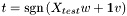
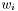
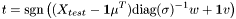
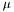
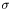
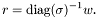
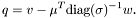
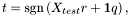
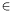

l1_logreg requires two data files:feature_fileclass_file
feature_file contains the feature matrix for training examples and class_file contains the corresponding class vector of training examples.
Data in feature_file and class_file are stored in Matrix Market (MM) exchange format; see http://math.nist.gov/MatrixMarket/formats.html for more information.
%%MatrixMarket matrix array real general m n x11 x21 ... xm1 x12 x22 ... xm2 ... x1n ... xmn
The first line contains the header of Matrix Market format. Here, it indicates that the object being represented is a matrix in array format and that the numeric data is real and represented in general form.
The second line contains the number of rows m, and the number of columns n of the feature matrix. From the third row, the matrix is stored in column-oriented order.
%%MatrixMarket matrix coordinate real general m n nnz i1 j1 xi1 j1 i1 j2 xi1 j2 ... i2 j1 xi2 j1 i2 j2 xi2 j2 ... ip jq xip jq
The first line contains the header of Matrix Market format. Here, it indicates that the object being represented is a matrix in coordinate format and that the numeric data is real and represented in general form. The second row contains the number of rows m, the number of columns n and the number of non-zero entries p of the feature matrix. From the third row, the matrix is stored in coordinate format: the first column is the example (row) index, the second column is the feature (column) index, the third column is the corresponding value, of the feature matrix.
Note that the class vector is stored as a matrix in Matrix Market format, whose size is (m x 1). Each class can have a value in [+1,-1]. Here, +1 for positive class, and -1 for negative class.
model_file model_file is generated when l1_logreg_train is executed. It contains a shifted intercept q and normalized coefficients ri, i=1,...,n. The following vector will be stored in Matrix Market format: %%MatrixMarket matrix array real general m 1 q r1 r2 ... rm-1Here,
n = m-1.
Without standardization, we can perform classification on a test set Xtest

where t is the prediction (or classification result) for the test data set. Thus, q is set to the intercept v and the normalized coefficients are set to the coefficients values, that is, ri=, i=1,...,n.
When standardization is used, the user need to perform the following:

where t is the prediction (or classification result) for the test data set.
For step 1, we need to store the column mean  and column standard deviation  of training example set, and everytime we do classification, we should standardize the test data set. However, this additional effort can be easily avoided by exploiting the property of standardization. We set the normalized coefficients ri to the coefficients divided by corresponding standard-deviations, that is,

Also, the shifted intercept is set to

Then, the classification can be done as follows:

where t is the prediction (or classification result) for the test data set.
result_file result_file is generated when l1_logreg_classify is executed. The value of ti  [+1,-1] of ith line corresponds to the classification result of ith example. Here, +1 for positive class, and -1 for negative class.
t1
t2
...
tm
feature 1 feature 2 feature 3 feature 4 class
example 1 3 0 1 -2 1
example 2 0 0 2 5 -1
example 3 7 1 -4 0 1
Feature file of this problem for dense format is: %%MatrixMarket matrix array real general 3 4 3 0 7 0 0 1 1 2 -4 -2 5 0Feature file for sparse format is:
%%MatrixMarket matrix coordinate real general 3 4 8 1 1 3 3 1 7 3 2 1 1 3 1 2 3 2 3 3 -4 1 4 -2 2 4 5Class file for both dense and sparse format is:
%%MatrixMarket matrix array real general 3 1 1 -1 1
For example, the problem data of the above example can be stored to files by typing the following script in Matlab:
>> X = [3 0 1 -2; 0 0 2 5; 7 1 -4 0];
>> b = [1; -1; 1];
>> mmwrite('exd_simple_X',X);
>> mmwrite('exd_simple_b',b);
This sequence of commands will generate a dense feature matrix exd_simple_X and the corresponding class vector exd_simple_b.Sparse matrix can be written to a file in a similar way:
>> X = [3 0 1 -2; 0 0 2 5; 7 1 -4 0];
>> b = [1; -1; 1];
>> X = sparse(X);
>> mmwrite('exs_simple_X',X);
>> mmwrite('exs_simple_b',b);
This sequence of commands will generate a sparse feature matrix exs_simple_X and the corresponding class vector exs_simple_b.